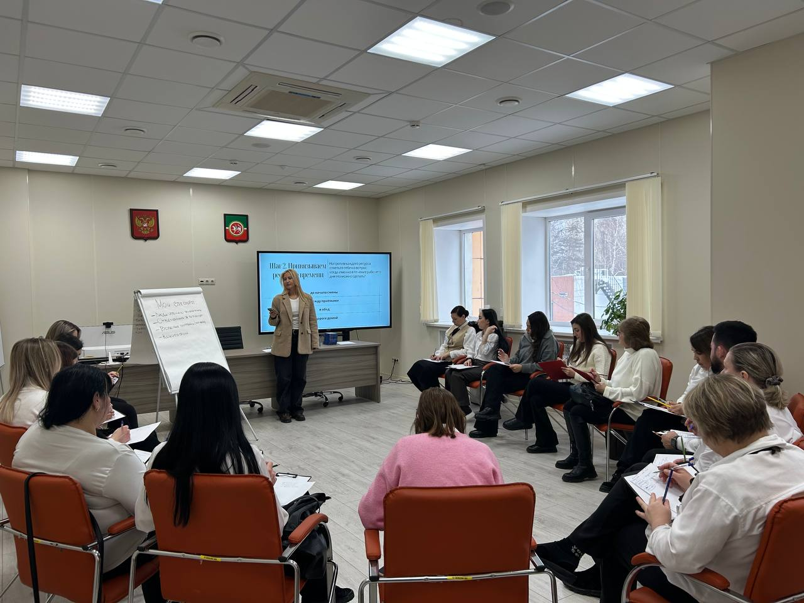
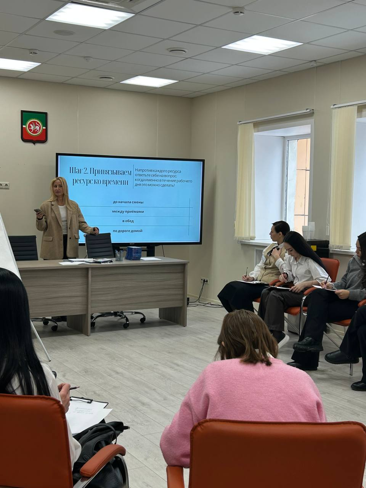

Точечный подбор специалиста
Нахожу людей под задачи вашей компании. Учитываю необходимый опыт, реальные результаты, мотивацию кандидата и особенности бизнеса.
НИНА ВЫСОЦКАЯ · HR И КАРЬЕРНЫЙ КОНСУЛЬТАНТ
Объединяю людей и бизнесы по миру. С 2013 года помогаю компаниям находить сотрудников, а специалистам — свой карьерный путь.
в поиске и подборе персонала
ориентир на закрытие вакансии
Первых кандидатов представляюобъединяю людей и бизнесы по миру
Руководители и специалисты под задачи и особенности вашего бизнеса.
Помощь в поиске работы, выборе профессионального направления и следующего шага.
01 / РАБОТОДАТЕЛЯМ
Нахожу людей под задачи вашей компании. Учитываю необходимый опыт, реальные результаты, мотивацию кандидата и особенности бизнеса.
Разбираюсь, что стоит за резюме: какие задачи человек решал и чего добился. Выделяю сильные стороны, риски и вопросы для дополнительной проверки.
Помогаю определить, какой человек нужен бизнесу и по каким критериям выбирать. Смотрю на найм с позиции HR-директора.
02 / СОИСКАТЕЛЯМ
01 / ПОИСК РАБОТЫ
Помогаю увидеть сильные стороны, подготовиться к выходу на рынок труда и понятнее рассказать работодателю о своём опыте. Чтобы двигаться к предложениям о работе увереннее.
02 / КАРЬЕРНАЯ КОНСУЛЬТАЦИЯ
Смена профессии, усталость от работы или желание перемен — разберём вашу ситуацию и возможные шаги. Выбирать можно, и решение не всегда в уходе из компании.
03 / КЕЙСЫ И ОТЗЫВЫ
РЕГИНА · КАРЬЕРНЫЙ ПЕРЕХОД
Смена роли, новый формат работы и выход на международный рынок.
Казань. Хотела сменить сферу деятельности и перейти на удалённую работу, но не понимала, какое направление выбрать.
Удалённая работа в международной FinTech-компании.
Карьерное направление, навыки, на которые стоит сделать упор, и то, как представить опыт в резюме. Появились уверенность и понимание ситуации на рынке труда.
Я очень хотела сменить сферу деятельности, перейти на удаленный формат работы и выйти на новый уровень дохода, но не могла понять, в каком направлении двигаться.
Решила обратиться к эксперту и это было лучшим решением!
В ходе комфортной, понятной консультации с Ниной я поняла, что хочу, на какие скилы делать упор, появилась уверенность и понимание ситуации на рынке труда.
Нина грамотно объяснила, как должно выглядеть резюме, которое четко без лишней воды будет описывать мой портрет кандидата.
Нина, благодарю Вас за консультацию по работе с резюме и карьерой! Мне приятно, что Вы были внимательны к моим пожеланиям и вопросам! 🙏 Это помогло мне определить свои сильные стороны, разработать индивидуальный план развития и дали ценные рекомендации по поиску работы.
Во время консультации я почувствовала себя уверенно и поняла, как буду действовать дальше!
Я очень благодарна за такую качественную консультацию и рекомендую её всем, кто хочет улучшить свою карьеру 👍 Остаюсь на связи!
Я потратила 5 лет на нелюбимую работу и поиски лучшего, а Нина за 2 недели разложила всё по полочкам и помогла мне прийти к работе, которая увеличила мой доход и улучшила жизнь.
Нина, добрый день! 🌸 Спасибо тебе большое! 💖💐 За твои приятные слова пожеланий и за то, что ты появилась в моей жизни с этой удивительной вакансией. Ты как проводник стала катализатором очень многих исключительно положительных изменений в моей жизни.
Благодарю тебя за это! Обнимаю!
04 / РАБОТА С КОМАНДАМИ
Тренинг для сотрудников МФЦ о поиске ресурсов на рабочем месте. Как находить возможность для восстановления в течение рабочего дня.


05 / ОБО МНЕ
Меня зовут Нина Высоцкая. В HR я с 2013 года, в том числе в роли HR-директора. Понимаю, как принимаются решения о найме, и помогаю бизнесу находить руководителей и специалистов.
Работаю с бизнесами по всей России: Москва, Санкт-Петербург, Казань, Нижний Новгород, Екатеринбург, Владивосток и Южно-Сахалинск. А также в Дубае и на Бали.
В карьерном консультировании соединяю опыт в бизнесе и психологическое образование. Помогаю найти опору, увидеть возможности и выбрать следующий профессиональный шаг.
МОЯ ЭКСПЕРТИЗА
Меня отличает сочетание 13-летнего опыта в HR, работы HR-бизнес-партнёром в российской группе компаний, практики HR-директора в международной FinTech-компании и частного рекрутера.
Психологическое образование дополняет этот опыт: помогает учитывать мотивацию, состояние человека и его готовность к переменам. Решение не всегда в уходе из компании.
06 / ВОПРОСЫ
Расскажите о компании, вакансии и задачах будущего сотрудника. Добавьте пожелания по опыту и срокам — это поможет начать предметный разговор.
Да. Напишите, что сейчас происходит в вашей работе и что хочется изменить. Не обязательно приходить с готовой целью — её тоже можно прояснить на консультации.
Нет. Работаю с бизнесами по всей России, а также в Дубае и на Бали. Начать общение можно в Telegram.
НАЧНЁМ С РАЗГОВОРА
Нужен сотрудник или следующий шаг в карьере? Напишите о своей задаче — познакомимся.
Написать в Telegram Telegram: @Nina_hr